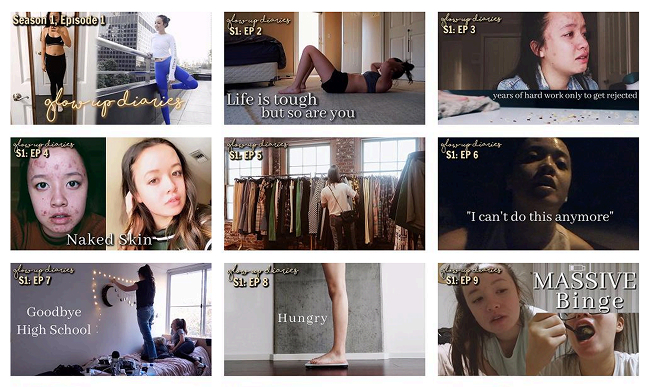
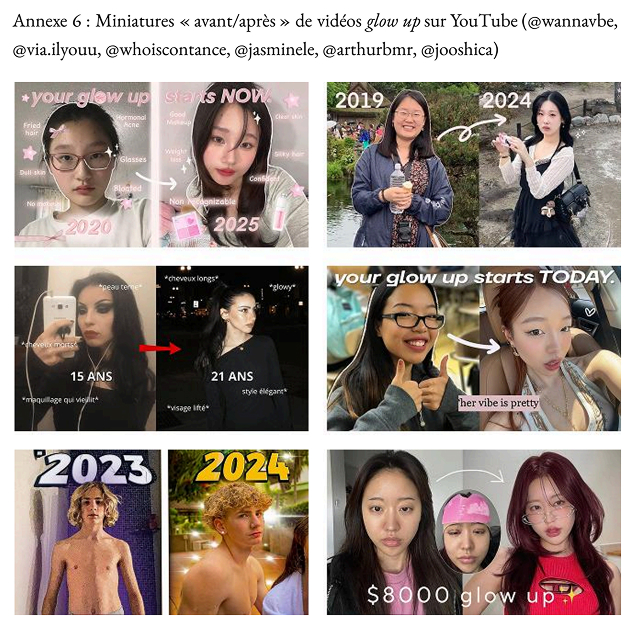
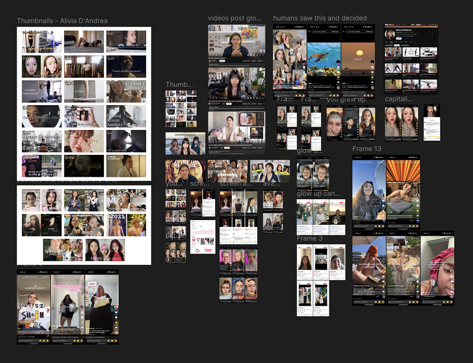
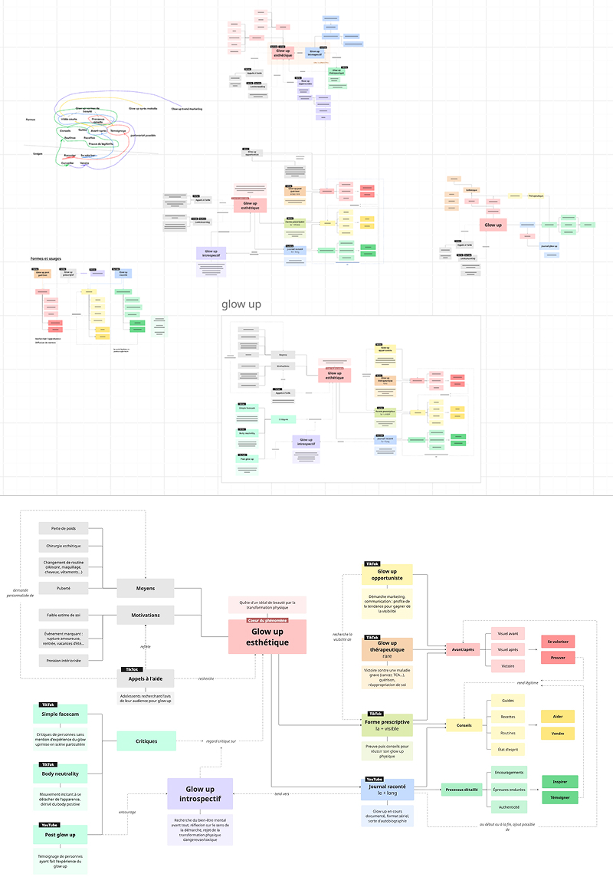

Mémoire
Mémoire de recherche
“Le glow up : réinvention de soi et besoin de validation à travers l’apparence”
Réalisé lors du Master 1 CMW
2025
Lire le mémoireContexte
Le terme "glow up" désigne une transformation positive, souvent de l’apparence, mise en scène sur les réseaux sociaux et perçue comme un indicateur de succès ou de reconnaissance sociale.
Ce phénomène m’intriguait. Pourquoi un tel engouement ? Plus largement, que révèle-il de notre rapport à la beauté, de notre identité et de nos dynamiques sociales ?
J’ai donc choisi d’en faire le sujet de mon mémoire ✏️
→ De fil en aiguille, j’en suis venue à formuler cette problématique :
Comment le phénomène du glow up, à travers les dynamiques sociales des réseaux sociaux, devient-il un outil de validation à la fois personnelle et sociale, façonnant l'identité à travers l'apparence ?

La recherche
J'ai commencé par une recherche bibliographique pour comprendre l'histoire du phénomène et explorer ses angles sociologique, culturel et médiatique. Cela m'a donné une profondeur historique sur les origines du glow up, et des clés de lecture pour mes observations terrain.
J'ai ensuite étudié le glow up en pratique sur YouTube et TikTok : analyse des vidéos, des discours et des mises en scène, et observation des commentaires pour comprendre les interactions et les réactions des spectateurs.

L'analyse
À partir de mes observations, j'ai structuré mes données avec des captures d'écran (miniatures, frames, posts) et un tableau d'analyse sur Google Sheets et Figma, regroupant titres, métadonnées et observations pour chaque contenu étudié.
J'ai ensuite défini une typologie du glow up, pour catégoriser les différentes formes que prend le phénomène en pratique. Cette étape m'a permis de structurer mon argumentation et d'étayer mes conclusions, de mettre en perspective mes observations terrain, et de créer un dialogue entre terrain et bibliographie, en reliant mes analyses aux idées issues de mon enquête bibliographique.
Cette typologie a été représentée sous forme de cartographie sur Miro, pour visualiser les dynamiques entre chaque type et donner à voir les liens entre les différentes formes du glow up.
Une fois tous les éléments d'argumentation en place dans mon plan de mémoire, je suis passée à la rédaction.

Ce que j'en retiens
Le mémoire, c’est un gros challenge. C’était la première fois que j’enquêtais sur un sujet peu traité comme le glow up. Cela m’a permis de découvrir un véritable attrait pour la découverte, la recherche et l’analyse. J’ai gagné des clés de compréhension et d’analyse académique que je n’avais et ne connaissais pas, venant d’un parcours plutôt technique.
→ L'exercice du mémoire est l'un des facteurs qui m'a orientée vers l'UX, et plus particulièrement vers l'UX research.